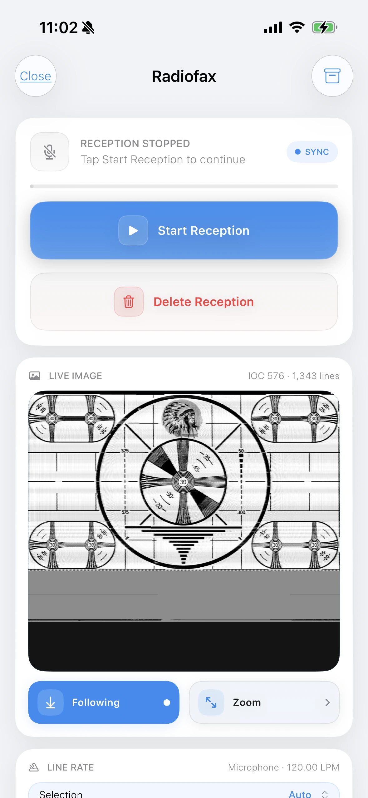
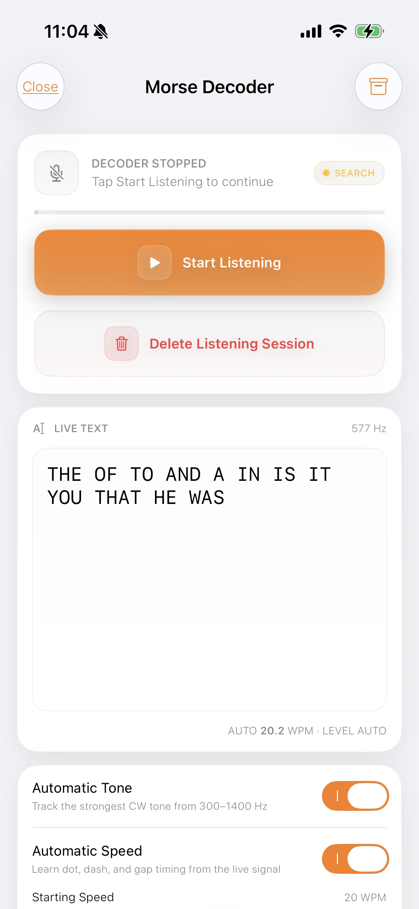
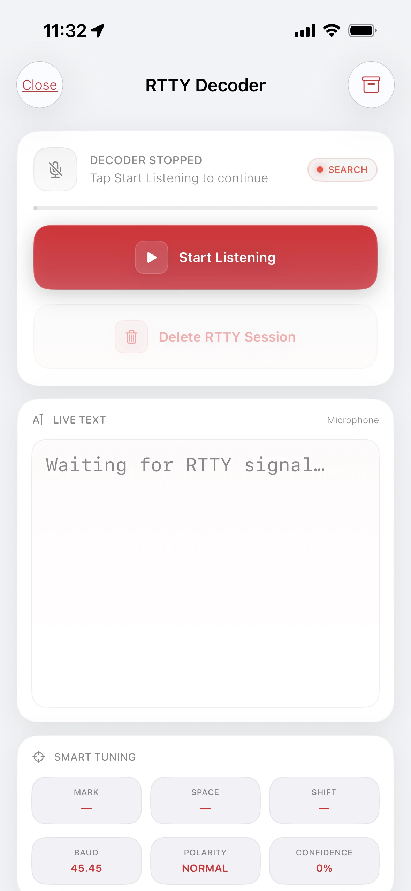

Turn radio sounds into something you can see and read.
You do not need to know radio jargon to begin. Put your phone near the radio speaker, choose the tool that matches the sound, and let SWAtlas listen. This guide explains what each tool does and what the numbers on its screen mean.
Radiofax builds a picture line by line. Morse turns short and long beeps into letters. RTTY reads text carried by two alternating tones. If you are unsure which one you found, listen to the rhythm and compare it with these descriptions.

HF FAXRadiofax Decoder
01 Radiofax
Receive weather charts as pictures.
Radiofax—often called weather fax or WEFAX—is a way for a station to send a black-and-white image over radio. Maritime stations use it for weather maps, pressure charts, forecasts, and other information useful at sea.
Think of it like this
The station reads a picture one thin horizontal line at a time. SWAtlas hears those changing tones and rebuilds the same lines on your screen until the full chart appears.
Use a second phone, tablet, or computer to play the video. Keep SWAtlas open on your main device so its microphone can listen to the sample just as it would listen to a real radio.
Play the YouTube video on the other device. Use a clear, moderate volume and place it near the SWAtlas device.
Open Radiofax and tap Start Reception. Keep both devices still while SWAtlas listens.
Wait through the short automatic learning period. SWAtlas studies the incoming tones and timing, recognizes the fax signal, and attempts to synchronize with it.
Watch the result build. Once the signal is identified, the received image begins to appear line by line.
No manual setup is needed for this first test. Automatic detection needs a little clean audio before it can identify and decode the sample.
What does it sound like?
A radiofax signal has a steady mechanical sweep or warble. A transmission may begin with a distinct start pattern, followed by a long stream of rapidly changing tones while the image is sent. It does not sound like speech.
How to receive your first image
Tune the signal carefully. A clear, stable tone produces straighter lines and a cleaner picture.
Open Radiofax and tap Start Reception. Keep the phone close enough to hear the speaker without covering the microphone.
Leave automatic sync enabled at first. SWAtlas will look for the line rate and align the incoming image.
Let the transmission continue. The chart grows from top to bottom; a complete weather map can take several minutes.
What the screen is telling you
SYNC
The decoder is looking for the timing pattern that keeps each image line aligned.
LPM
Lines per minute—the speed at which horizontal lines are being transmitted.
IOC
A standard image format setting that determines the expected picture width.
Following
Keeps the newest part of the growing image visible while reception continues.
Beginner tip: A slanted picture usually means timing or tuning needs to settle. Give Smart Sync a moment, and keep the radio and phone still during reception.

CWMorse Code Decoder
02 Morse code
Read dots and dashes as live text.
Morse code sends letters using short sounds (dots), long sounds (dashes), and the quiet gaps between them. Radio operators often call this kind of transmission CW, short for continuous wave.
Think of it like this
A dot and a dash are simply a short beep and a long beep. SWAtlas measures the length of each tone and gap, groups the pattern, and places the matching letter in the Live Text area.
Play the sample on a separate phone, tablet, or computer. SWAtlas must remain open on the decoding device with microphone access enabled.
Start the video at 1:02 on the other device. Set the volume so the beeps are clear but not harsh or distorted.
Open Morse Decoder and tap Start Listening. Leave Automatic Tone and Automatic Speed enabled.
Allow a short learning period. SWAtlas finds the strongest CW tone, studies the dot, dash, and gap timing, and estimates the sending speed.
Watch Live Text. After the tone and rhythm are identified, decoded letters begin to appear automatically.
A brief delay is normal. The decoder needs to hear enough of the pattern to learn its tone and speed before the text becomes reliable.
What does it sound like?
Listen for one clear musical pitch switching on and off in a deliberate rhythm: beep-beep, beeeep, then a pause. Faster operators leave shorter gaps; slower operators make every element easier to separate.
How to decode a Morse signal
Tune for a clean single tone. Try to reduce nearby voices, whistles, and other Morse stations.
Open Morse Decoder and tap Start Listening. Live Text fills as recognizable characters arrive.
Keep Automatic Tone on. It follows the strongest CW pitch in the supported range.
Keep Automatic Speed on while learning. SWAtlas estimates the operator’s words-per-minute speed and adapts to the rhythm.
What the screen is telling you
Hz
The audio pitch SWAtlas is following. This is the tone you hear, not the radio’s tuned frequency.
WPM
Words per minute—a common way to describe how quickly Morse is being sent.
Automatic Tone
Tracks the clearest CW tone so small tuning changes are easier to handle.
Automatic Speed
Learns the dot, dash, and gap timing from the live signal.
Beginner tip: A few wrong letters are normal when a signal fades. Better tuning, moderate speaker volume, and less background noise usually help more than changing advanced settings.

FSKRTTY Decoder
03 RTTY
Turn two alternating tones into typed text.
RTTY means radio teletype. Instead of using one tone with short and long beeps, it switches quickly between two pitches. Those two states carry letters, numbers, and punctuation for the decoder to reconstruct.
Think of it like this
Imagine an old typing machine using a high tone for one signal state and a low tone for the other. The exact pattern of those changes tells SWAtlas which character was sent.
Use a second device to play the RTTY sample while SWAtlas listens through the microphone on your main device. A quiet room makes the first test easier.
Play the YouTube video on the other device. Place its speaker near the SWAtlas microphone at a comfortable volume.
Open RTTY Decoder and tap Start Listening. Keep the sample playing continuously.
Wait while SWAtlas learns the signal. Smart Tuning searches for the two tones, measures mark, space, and shift, and determines whether the pattern is usable RTTY.
Watch confidence and Live Text. Once the signal is identified and the settings settle, SWAtlas begins turning the tone changes into characters.
Give Smart Tuning a few seconds. The values may move at first while the decoder learns the sample and locks onto the signal.
What does it sound like?
RTTY has a fast, busy, two-note sound—often described as a repeated “diddle-diddle.” Unlike Morse, it usually runs continuously while text is being sent, with rapid switching between the two pitches.
How to decode an RTTY signal
Tune until both tones are clear. The signal should sound balanced rather than muffled or distorted.
Open RTTY Decoder and tap Start Listening. Keep the microphone near the speaker while the tool searches.
Give Smart Tuning a few seconds. It measures the mark and space pitches and the distance between them.
Watch confidence and Live Text. As the tuning becomes stable, confidence should improve and readable characters can begin to appear.
What the screen is telling you
Mark / Space
The two audio pitches that RTTY alternates between to carry digital information.
Shift
The frequency distance between the mark and space tones.
Baud
The signaling speed. 45.45 baud is a common amateur RTTY setting.
Polarity
Shows which tone is treated as mark and which as space. Reversed polarity can produce unreadable text.
Confidence
An estimate of how clearly the decoder recognizes a usable RTTY signal.
Live Text
The characters reconstructed from the incoming two-tone pattern.
Beginner tip: If confidence stays near zero, check that you are hearing RTTY rather than another digital mode. Then tune slowly until both tones are strong and distinct.
A quick way to remember
Match the tool to what the signal is carrying.
All three tools listen through the microphone, but each is designed for a different signal pattern and a different kind of result.
01 · RADIOFAX
Changing sweep → image
Use it when a station is sending weather maps, charts, or other black-and-white pictures.
02 · MORSE
Short and long beeps → text
Use it for a single tone that switches on and off in dot-and-dash rhythms.
03 · RTTY
Two alternating tones → text
Use it for the fast, continuous two-pitch sound of radio teletype.
Before changing settings
Most problems begin with the audio.
The decoder starts, but nothing appears.
Confirm that microphone access is allowed, raise the radio volume a little, and move the phone closer to the speaker. Also make sure the selected tool matches the type of signal you can hear.
Text appears, but it is mostly random characters.
Tune more precisely and reduce background noise. Fading, interference, overdriven speaker audio, or the wrong RTTY polarity can all turn a real signal into incorrect characters.
The Radiofax picture is slanted or broken.
Keep automatic sync enabled, wait for the station’s start sequence when possible, and avoid changing tuning or moving the phone while the image is being received.
Automatic detection keeps changing.
The tool may be hearing several signals at once. Narrow the radio filter if available, tune so the wanted signal is strongest, and lower the volume if the speaker sounds harsh or clipped.